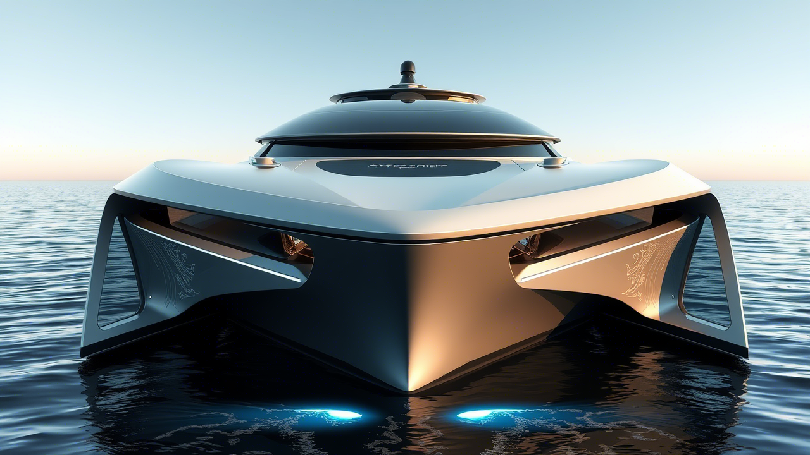
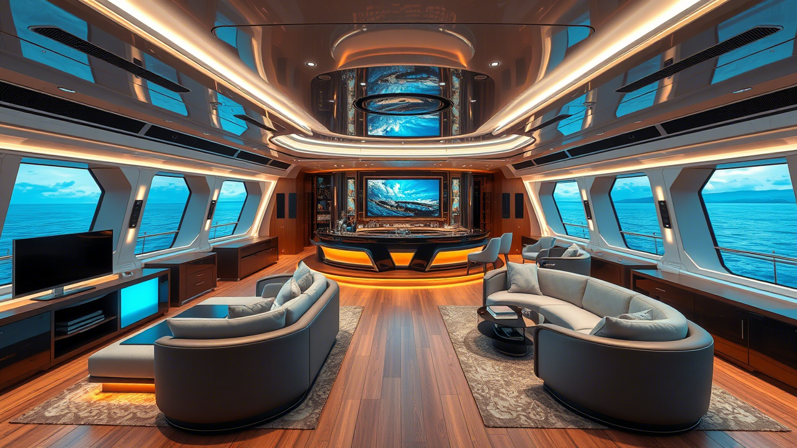
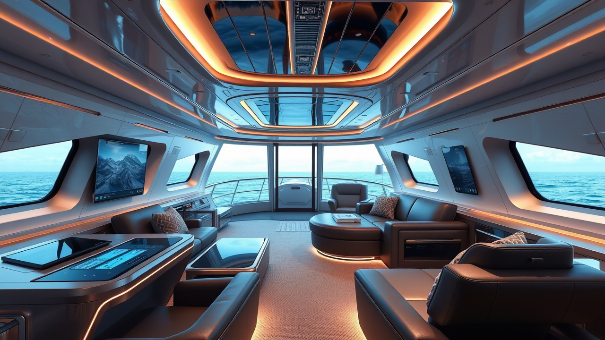

O yatch compacto que redefine o conceito de mobilidade marítima inteligente.
O Aether X é a perfeita fusão entre minimalismo estético e inovação funcional. Seu design exterior foi cuidadosamente esculpido por mestres designers náuticos, combinando linhas fluidas e aerodinâmicas com um perfil marcante e contemporâneo.
O interior do Aether X reflete o luxo sem ostentação. Ambientes amplamente iluminados por luz natural, materiais nobres como couro italiano e acabamentos em carvalho escuro criam uma atmosfera única, ideal tanto para navegações curtas quanto para escapadas prolongadas no mar.
A cabine de comando do Aether X é um verdadeiro centro tecnológico sobre as águas. Equipada com painéis digitais completos, controle centralizado e automação inteligente, tudo foi pensado para oferecer ao capitão o máximo de conforto, segurança e precisão durante qualquer tipo de navegação.
